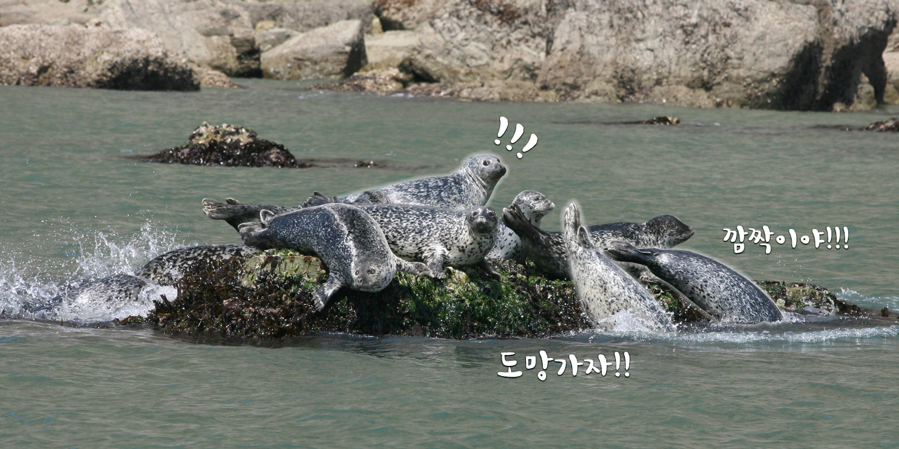
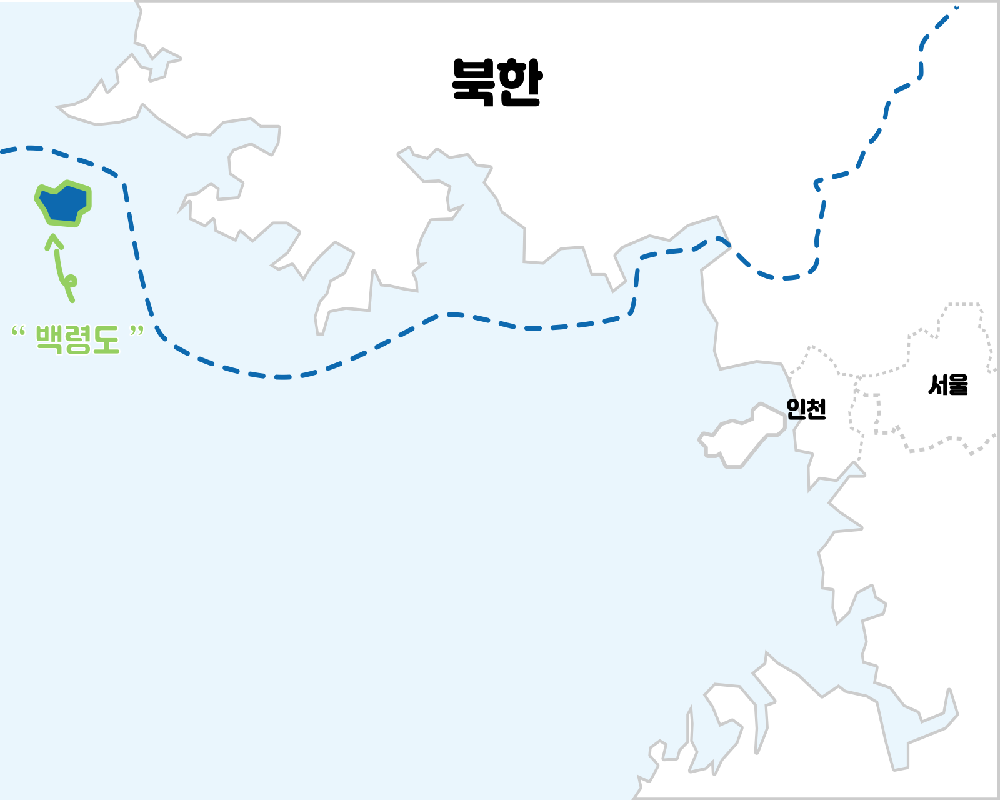

백령도
백령도 여행
점박이 물범
안내사항
물때확인
날씨정보
입출항정보
섬 관광 정보
자주 묻는 질문
유람선을 타다가 물범을 발견했어요!
어떻게 해야 할까요?

점박이 물범은 공격적인 동물은 아니지만 겁이 많아요!
최대한 큰 소리는 내지 않고, 조용히 사진에 담아가세요
야생동물에게 먹을 것을 주시면 안되는거 아시죠?!
물범을 보려면 언제 가야 하나요?
백령도 바다에서 살고있는 물범이지만,
해변에는 주로 나오지 않고
바다위의 바위에서 휴식을 취해요!
날씨가 좋은날에 봐야 높은 확률로
점박이 물범을 볼 수 있어요!
긴급 상황이 발생했어요! 어디로 대피 하나요?

백령도는 인천광역시 소속이지만, 북한과 더욱 가까워요.
그래서 종종 백령도에서는 위기대피 발령이 내려질 때도 있답니다.
아래 사이트에서 자세한 대피 시설의 위치를 확인해 주세요!
대피시설 알아보기
더 궁금하신 것이 있으신가요?
더 알아보기
질문 하기
백령도 민원 발생시 신고 센터
인천 광역시청
Tel.000-0000-0000
백령도 갤러리